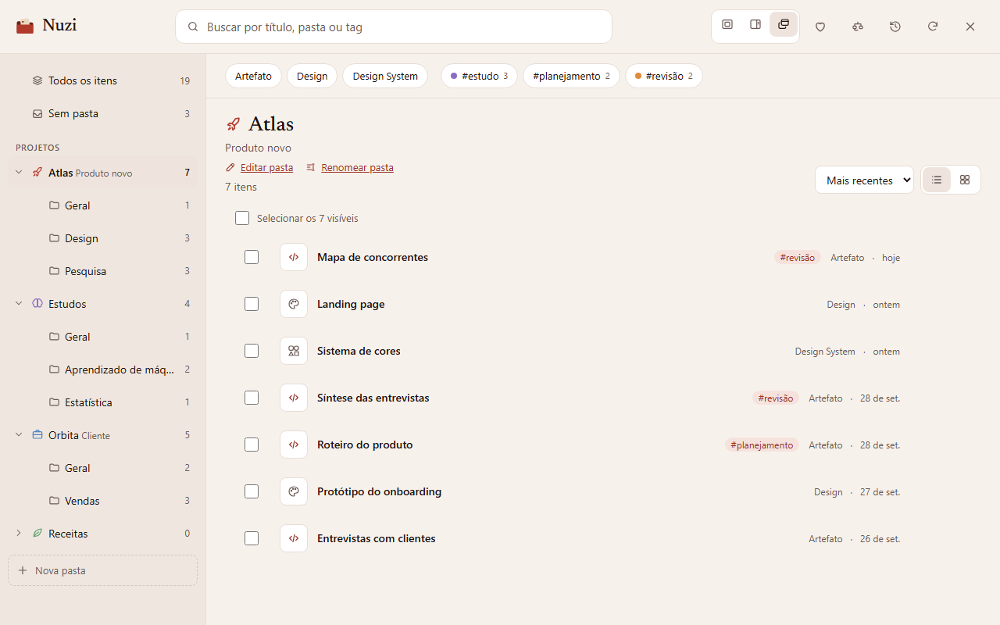
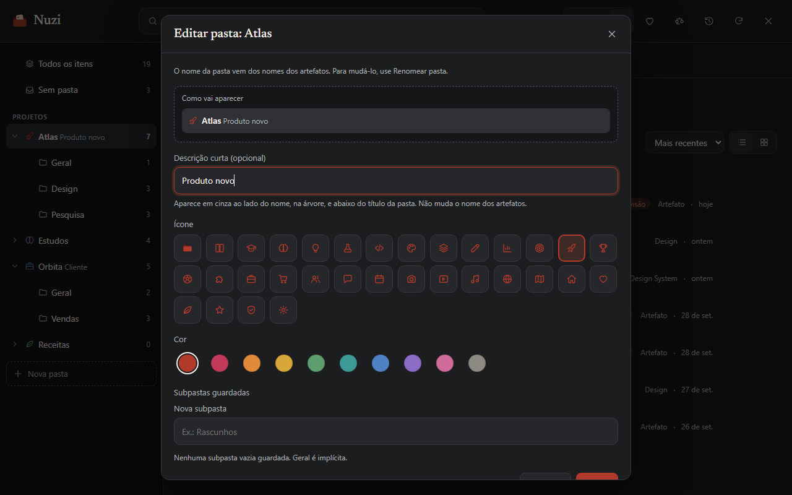
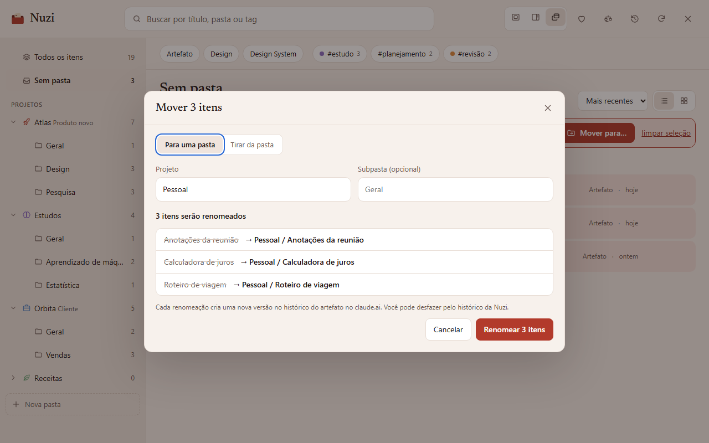
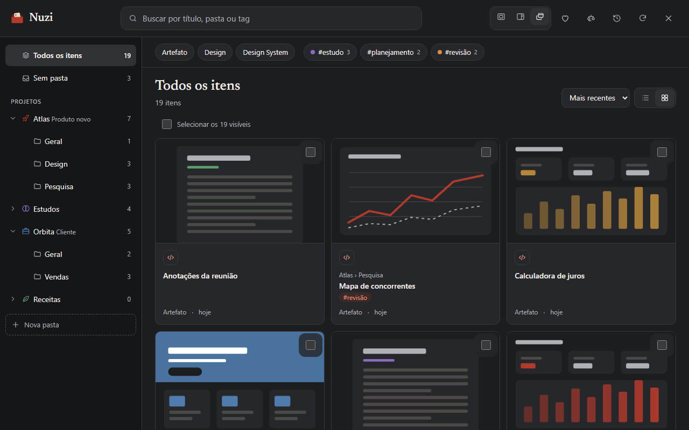

O arquivo pessoal dos seus artefatos do claude.ai.
Dezenas de artefatos e projetos numa lista só? A Nuzi dá a cada um um lugar e uma etiqueta: projetos, subpastas e tags, gravados no próprio nome.
Grátis na Chrome Web Store. Sem servidor, sem conta, nada sai do seu navegador.
A organização mora no nome
Em vez de um banco de dados, a Nuzi escreve a pasta no nome do artefato. Por isso ela sincroniza entre dispositivos e continua valendo mesmo sem a extensão. Escreva uma tábua e guarde no arquivo:
Tudo o que a lista não faz
- Artefatos publicados e projetos do Claude Design juntos
- Árvore de pastas com contagens
- Busca sem acentos, filtros por tipo e tag
- Lista ou grade com prévias

- Mover vários itens de uma vez
- Arrastar direto para a pasta
- Renomear uma pasta inteira
- Descrição, ícone e cor por pasta

- Pré-visualização "nome atual → nome novo"
- Um item por vez, conferido depois
- Histórico com desfazer

- Modal, painel lateral ou janela própria
- Tema claro e escuro
- Teclado completo e leitores de tela

Um arquivo de família, há 3.400 anos
Vire as tábuas.
Nada sai do seu navegador
Sem servidor
Sem conta, sem telemetria, sem anúncios.
Sem credenciais
A Nuzi nunca lê nem guarda senhas, cookies ou tokens.
Só o nome
Ela altera apenas o nome dos seus artefatos, e só quando você confirma.
Encha o cesto de tokens
A Nuzi é gratuita. Se ela te poupou tempo, seu apoio vai para o cesto de tokens de IA que usamos para criar coisas incríveis.